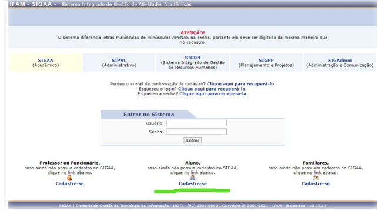
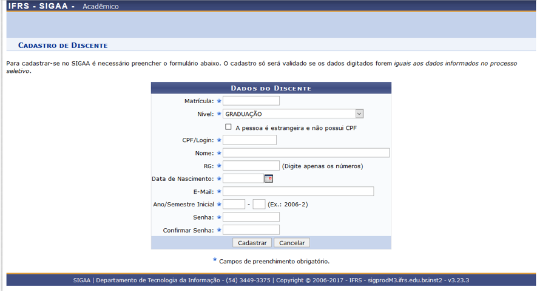
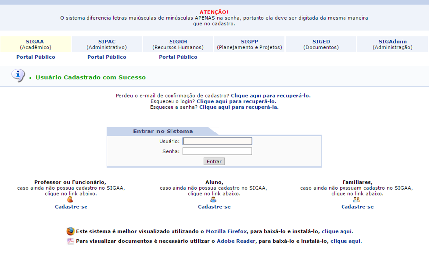
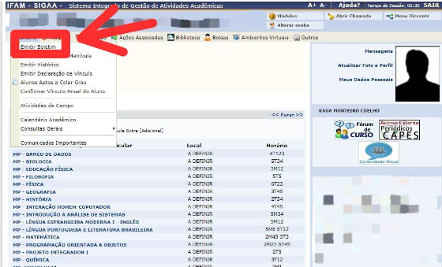
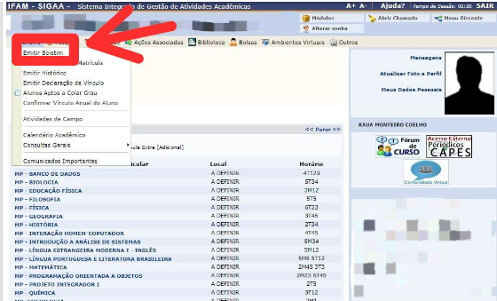

Aluno - Auto Cadastro
Para realizar o cadastro será necessário que o aluno esteja matriculado na Instituição
Vamos aos passos:
1. Acessar o link: SIGAA
2. Clique no ícone: Aluno Cadastre-se

Em seguida, será exibida a tela que lhe permitirá a inserção de seus dados para a
realização do cadastro.
3. Preencher os campos:

Matrícula: Informe o número de sua matrícula.
Nível: Selecione o nível que você está cursando. Se você é estrangeiro, marque a
caixinha.
CPF/Login: Informe o número do seu CPF.
Nome: Informe o seu nome completo.
RG: Informe o seu RG.
Data de Nascimento: Informe sua data de nascimento ou clique no
ícone
Email: Informe seu e-mail.
Ano/Semestre Inicial: Informe o ano e o semestre de ingresso.
Senha: Informe uma senha.
Confirmar Senha: Confirme a senha informada anteriormente.
4. Clicar em Cadastrar
Em seguida será exibida uma mensagem de sucesso confirmando o cadastro. Feito o cadastro,
o aluno pode se logar no SIGAA utilizando o número do CPF no login e a senha registrada.

 
